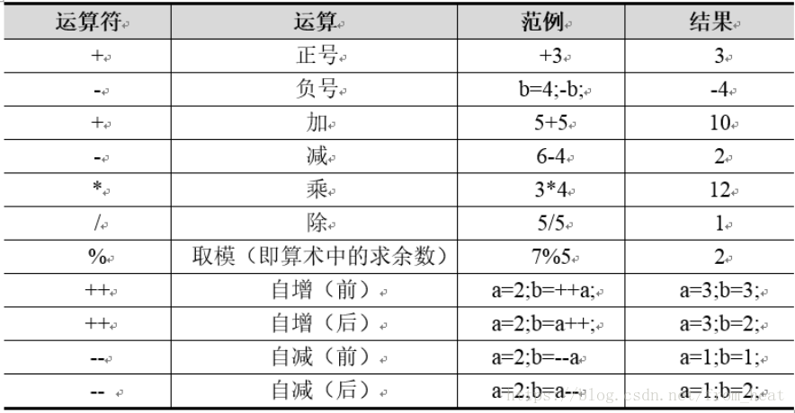
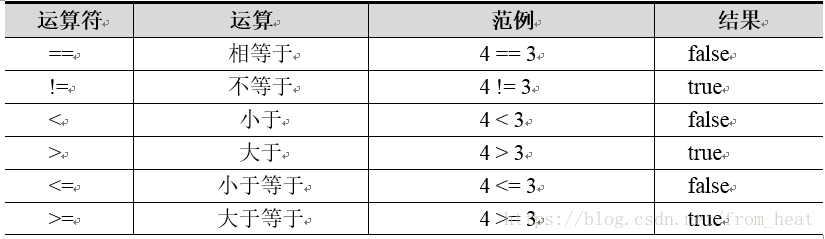
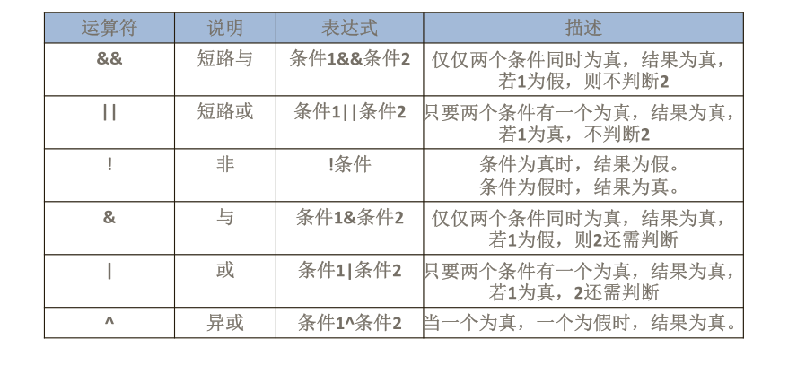
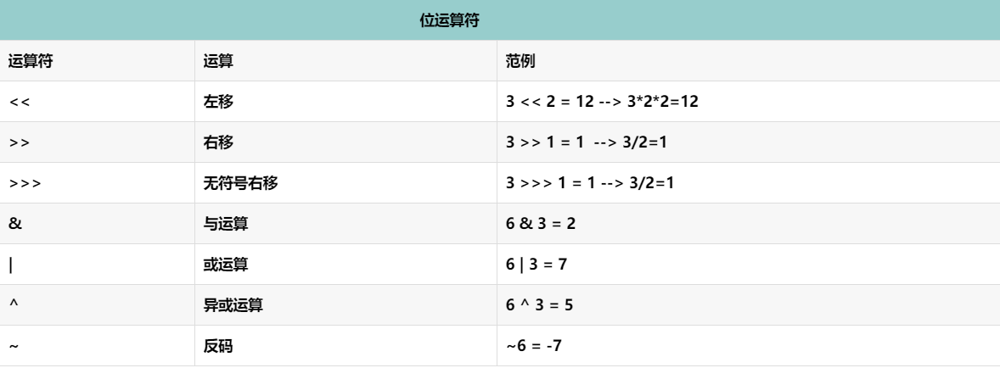
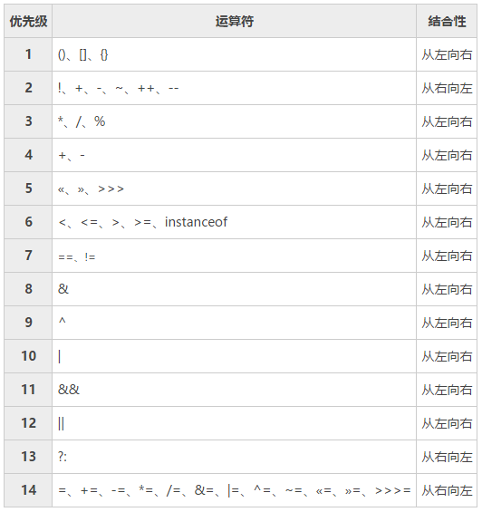

运算符
运算符是一种特殊的符号，用以表示数据的运算、赋值和比较等。
运算符的分类
算术运算符

算术运算符的注意问题
如果对负数取模，可以把模数的负号忽略不计，例如：5%-2的结果是1。但被模数是负数则不可忽略，例如：-5%2的结果是-1。此外，取模运算的结果不一定总是整数。
整数与整数乘除运算的时候，会舍弃掉小数位，结果任然为整数。例如7 / 2 的结果是3。
“+”除字符串相加功能外，还能把非字符串转换成字符串，例如：“5+5=”+5+5的结果是5+5=55。
赋值运算符
符号：=
当“=”两侧数据类型不一致时，可以使用自动类型转换或使用枪支类型转换原则进行处理。
支持连续赋值。
扩展赋值运算符：+=、-=、*=、/=、%=
比较运算符

比较运算符的结果都是boolean型，也就是要么是true，要么是false。
逻辑运算符

逻辑运算符用于连接布尔型表达式，在java中不可以写成3<x<6，应该写成3<x&x<6。
“&”和“&&”以及“|”和“||”的区别：
&或者|时：无论左边的条件是否为真，都参与运算。
&&或者||时：如果左边的条件为真，右边无需参与运算，只有左边的条件为假的时候右边的条件才会参与运算。
位运算符
为运算符直接对二进制进行运算。

先了解一下进制，生活中用到的算数一般是按十进制来计数的，有0~9十个数，当一位数上的数字大过9的时候，就没办法在这个位数上表示了，需要向前进位数，例如当从9+1时，0~9中没有一个数可以表示这个结果，所以增加一位数，达到10。当19+1的时候，在个位数上又没办法表示了，就又需要向前增加一位从而变成20。这是十进制，而计算机是使用二进制的，所以只有两个数，就是0和1。二进制的进制方式跟十进制类似，当1+1的时候，0和1都没办法表示这个结果，就向前进一位，变成10,。要注意的是，这个10是在二进制下的表示，数值代表的是二而不是十进制下的十。
正数二进制变负数二进制：正数二进制→反码→补码（加一）→负数二进制
负数二进制变正数二进制：负数二进制→原码（减一）→反码→正数二进制
左移：左移多少位就是乘以2的多少次方。
右移：右移多少位就是乘以2的多少负次方。
无符号右移：正数无符号右移跟正数右移结果一致，负数无符号的右移与负数右移结果不一样。
与运算：两个数的二进制同位的数进行比较，只有两个同位的数都是1的时候结果才为1，其余结果都为0。
或运算：两个数的二进制同位的数进行比较，只有两个同位的数都是0的时候结果才为0，其余结果都为1。
异或运算：两个数的二进制同位的数进行比较，只有两个同位的数不相同的时候才为1，其余都为0。
反码：二进制数0变成1,1变成0,0和1转换。
三元运算符
(条件表达式)?表达式1:表达式2；
当条件表达式为true时，执行表达式1；当条件表达式为false时，执行表达式2。
例如：int k = 1 > 0 ? 1 : 0; 因为k=1是大于0的，所以结果为1。int k = 0 > 1 ? 1 : 0; 因为k=0是小于1的，所有结果为0。
运算符的优先级

优先级的2级别中的“+”和“-”代表的是正负符号。优先级的4级别中的“+”和“-”代表加减符号。